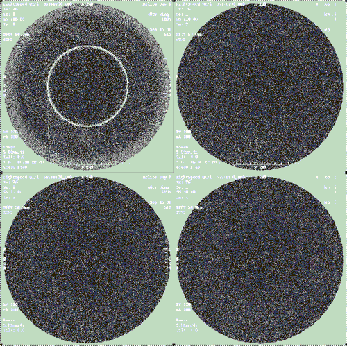
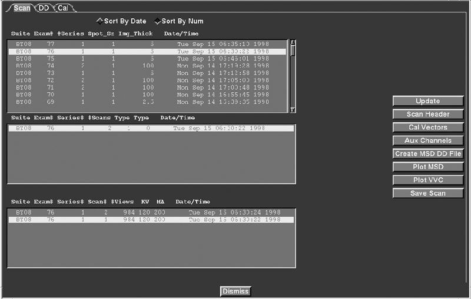
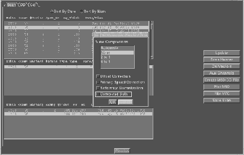
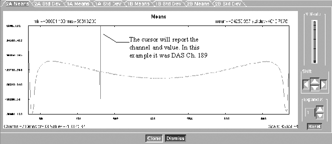
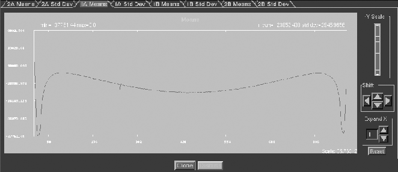
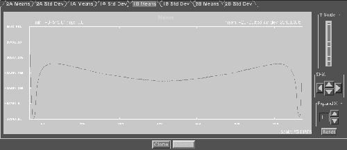
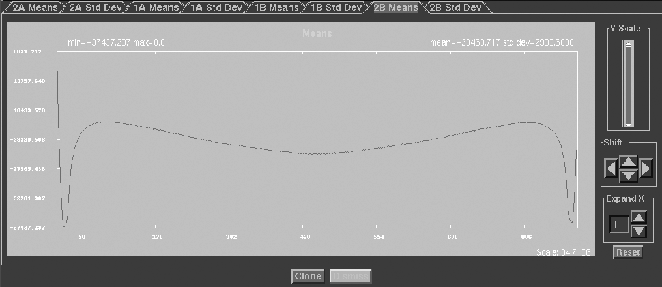
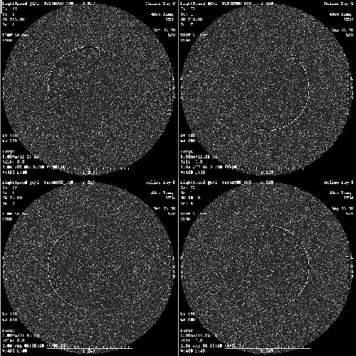

Operating Documentation
Direction 5193891-800, Rev# 5
LightSpeed 5.X Pro16 Limited Access Service Information (Adv)
Operating Documentation |
| NOTE: | Related Topic: Refer also to Image Quality Test Procedures |
Using the Example shown in Illustration 1, there is an obvious ring in the first image within the group of 4 images. During an Axial series, it is important to know certain parameters about the Scan Prescription. See Table 1.
Table 1: Troubleshooting a Ring in an Axial Image
| SCAN (RX) PRESCRIPTION | COMMENTS | |
|---|---|---|
| Scan Type | Axial | In a Axial mode, there are several options relative to scanning and displaying images, either 4 x i, or 2 x I (where i = thickness) |
| In a 4 x i mode, images are created from the rows used as indicated by slice thickness. This mode should always be used to troubleshoot Detector / DAS related artifacts. | ||
| In a 2 x i mode Recon actually combines 2 rows of data to produce a thicker slice. | ||
| Scan Type | Helical | Images are created using data from all Rows used during data acquisition. (The actual rows being dependent on slice thickness) The amount of data used to reconstruct a image from a row, or row weighting is dependent on table speed. |
| Head First | Head First | Image 1 consists of the Data in Row 4A |
| Image 2 consists of the Data in Row 3A | ||
| Image 3 consists of the Data in Row 2A | ||
| Image 4 consists of the Data in Row 1A | ||
| Image 5 consists of the Data in Row 1B | ||
| Image 6 consists of the Data in Row 2B | ||
| Image 7 consists of the Data in Row 3B | ||
| Image 8 consists of the Data in Row 4B | ||
| Feet First | Feet First | Image 1 consists of the Data in Row 4B |
| Image 2 consists of the Data in Row 3B | ||
| Image 3 consists of the Data in Row 2B | ||
| Image 4 consists of the Data in Row 1B | ||
| Image 1 consists of the Data in Row 1A | ||
| Image 2 consists of the Data in Row 2A | ||
| Image 3 consists of the Data in Row 3A | ||
| Image 4 consists of the Data in Row 4A | ||
| Slice Thickness | 4 x 1.25 | Uses 4 Center rows of the Detector (D2, D1, D1, D2) |
| 4 x 2.50 | Uses 8 Center rows of the Detector (D4+D3, D2+D1, D1+D2, D3+D4) | |
| 4 x 3.75 | Uses 12 Center rows of the Detector (D6+D5+D4, D3+D2+D1, ....) | |
| 4 x 5.00 | Uses 16 rows of the Detector (D8+D7+D6+D5, D4+D3+D2+D1,...) | |
| 8 x 1.25 | Uses 16 rows of the Detector (D8, D7, D6, D5, D4, D3, D2, D1, D1, D2...) | |
| 8 x 2.50 | Uses 16 rows of the Detector (D8+D7, D6+D5, D4+D3, D2+D1, D1+D2...) | |
| 1 x 1.25 | Uses 1 Center row of the Detector (A side D1) | |
| Thin Twin | Uses 2 Center rows of the Detector (D1, D1) | |
| Technique | KV vs. Slice Thickness | The DAS Converter boards have 31 pre-amp gains that are selected by selected technique. These gains are not User selectable, however it is important to know if a Artifact only appears at the same pre-amp gain. The pre-amp gain used can be found within the scan header by using Scan Analysis. |
| Focal Spot Size | Small vs. Large | Technique dependent small spot ≤ 24KW, Large spot > 24KW |
| Calibration Used | Small vs. Large | Needed to know if artifact may be caused by cal vectors |
Illustration 1: Example of Bad Channel in Axial Image Series

Looking at the Example in Illustration 1, just by knowing the scan series was using Axial 4 x 5.00 Mode and was done Head first (Annotation of image vs. Table position), it can be determined that the Ring is probably in Row 2A of the Scanfile.
To confirm this, use Scan Analysis and plot the Means & Standard Deviations (MSD) of the selected Exam, Series, and Scan Number. From the Service Desktop:
Select [UTILITIES] .
Select [TOOLS] .
Select [SCAN ANALYSIS] .
Illustration 2: Scan Analysis GUI

Select an [EXAM NUMBER] , [SERIES] , and [SCAN NUMBER] . Remember that 1 scan, in a 4 x i mode, is made up of 4 Data sets (or rows), which produces 4 images. In the example, images 1 through 4 are created from scan 1. Once the scan is highlighted, select [PLOT MSD] .
Illustration 3: Plot MSD GUI

Leave the view compression defaulted to [NONE] , but choose [CONVOLVED DATA] , which will identify a ring type artifact better in the resultant plot. Select [OK] .
Illustration 4: Scan Analysis (2A) Means & Standard Deviation GUI

The Scan Analysis Tool will first plot Row 2A. Any of the 4 rows of Means and Standard Deviations can be viewed by selecting the appropriate tabs (see Illustration 4). Select the tab that indicates the row where the ring is expected based on your initial observations. It maybe necessary to adjust the level to find a spike in the data or view other rows. Look for any abnormal spikes.
Illustration 5: Scan Analysis (1A) Means & St. Dev. GUI

In Row 2A (see Illustration 4), the ring is apparent. Notice the large spike in the data on channel 189. Row 1A (see Illustration 5) has a small spike on channel 189 that is a result of capacitive discharge from row 2b channel 189. The small spike can be ignored. It is a product of the major spike on row 2B. Rows 1B and 2B look good. See Figures Illustration 6 and Illustration 7.
Illustration 6: Scan Analysis (1B) Means & St. Dev. GUI

Illustration 7: Scan Analysis (2A) Means & St. Dev. GUI

Now the Ring has been verified. It is in Row 2B and is on DAS Channel 189.
From within Scan Analysis, Cal vectors can be plotted to see if the bad DAS channel is present.
Determine if the ring is caused by a particular acquisition mode by scanning a phantom using different modes or slice thickness’. The example was scanned in a 4 x 5.00 mode and the ring appeared on Row 2A, therefore, the Detector rows or diodes used were D8+D7+D6+D5. They produce row 2A. If another scan was taken at 4 x 1.25 mode, then the first image, or row 2A data would be acquired from Detector row D2. If the ring is a hard failure (consistent every time) and if after changing slice thickness the ring does away, the ring may have been caused by a suspect detector. Remember to use 8 x 1.25 mm in the 8 slice system configuration. Perform further detector verification before replacing a detector. If the ring is still present, the problem could still be the detector, but may be a DAS board or elastomer interface connection.
By using the [DAS / DETECTOR] Architecture Tool, found in the pull-down menu under [FILE] , select the tool. A TTY window appears and prompts for a Detector Row and DAS Channel. The program will display the associated DAS Converter board, Detector channel, module number, elastomer number, and other important information.Find the associated DAS converter board number. If you have multiple rings, look for patterns (Converter Bd, Row, etc.).
If DAS is Suspect, swap filter Cards and repeat Scan & Analyze. When swapping cards make sure you swap with a card 4 slots away, slot 12 with slot 16 for example. This ensures the data from FET multiplexing is not on the same card.
If bad channel follows bd. replace the bd.
If bad channel stays at same location, problem area could be:
DAS Backplane
DAS Backplane to Elastomeric connection point
Elastomeric to Detector Flex connection point
Bad Detector (Replace)
Bad Flex (part of detector, replace Detector)
Bad Flex to Detector connection point (part of detector, replace Detector)
Bad Detector Channel (part of detector, replace Detector
Bad Detector Cell (part of detector, replace Detector)
Troubleshoot Ring Artifacts in a Helical series by duplicating the problem in a Axial Mode. If the Helical data is used to troubleshoot, the bad data can be in any row since all 8 rows of data can be used to produce a Helical image and the number of views to produce a helical image are weighted differently based on table speed and pitch.
Note that the Helical images are a result of the same bad DAS Channel as the Above Axial example. The hard ring in the Axial example appears as partial arcs in the Helical images.
Illustration 8: Example of Bad Channel in Helical Image Series
